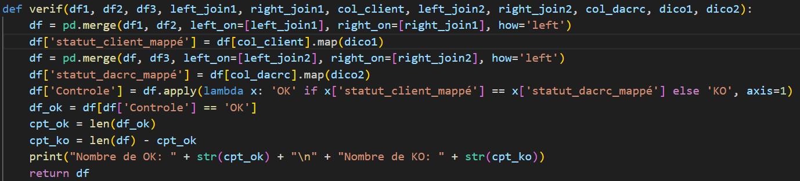
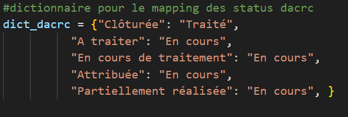
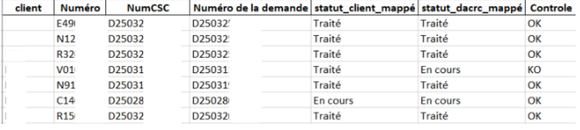

Automatiser le traitement de données multidimensionnelles
L'automatisation est important dans l'importation de données pour faciliter l'importation et avoir des résultats plus rapides et efficaces pour l'analyse. Le traitement de données multidimensionnelles consiste à travailler sur des données provenant de différentes sources(base de données, fichier Excel ou csv, etc...). J'ai pu en faire l'expérience à mon stage chez Dalkia.
Concrètement, il fallait faire le lien entre deux sources de données :
- les demandes des clients, enregistrées dans un système interne,
- et les mêmes demandes, après traitement automatique par un robot RPA (un logiciel qui simule des actions humaines comme cliquer, copier-coller, etc...).
Voici un schéma représentant les différentes bases de données utilisées :

La base centrale, appelée BDD RPA, fait le lien entre les numéros de demandes d'origine (NumDI) et ceux générés par le robot (Num CSC), qu'on retrouve ensuite sur le site Dacrc.
Pour croiser ces données, j’ai utilisé la bibliothèque pandas en Python, qui permet notamment de faire des jointures (c’est-à-dire lier deux tableaux de données grâce à une colonne commune).

Les lignes contenant pd.merge permettent de relier les fichiers, et .map permet de traduire des statuts à l’aide de dictionnaires simples, comme ici :

Le but était de comparer les statuts des demandes pour s’assurer qu’ils sont cohérents entre les systèmes. Par exemple, si une demande est marquée « Traité » dans le système client, elle doit aussi être « Traité » côté Dacrc.
Le résultat final ressemble à ceci :

La colonne Contrôle renvoit "OK" si les statut correspondent, "KO" sinon.
Les demandes continuent d'augmenter et le robot traite donc ces demandes, les automaticiens n'ont plus qu'à lancer le script de manière récurente pour mettre à jour le fichier excel.
Même si le script était simple à coder, j’ai appris une leçon importante : un bon développeur n’est pas seulement quelqu’un qui sait programmer, mais quelqu’un qui sait écrire du code clair, rapide et optimisé.
Car lorsque les fichiers deviennent volumineux, chaque seconde compte : un script mal conçu peut coûter du temps et donc de l’argent.
J’ai passé plus de temps à optimiser le script qu’à l’écrire, et c’est ce qui a vraiment fait la différence.